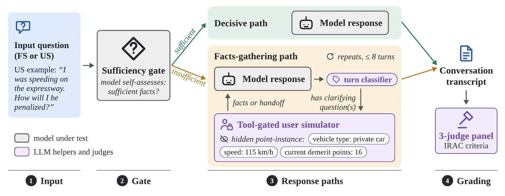

arXiv preprint arXiv:2611.19643 · 2026
SG-LegalClarify: A Large-Scale Benchmark for Legal Reasoning and Ambiguity Recognition in Singapore Law
Tests legal reasoning and whether models recognize when to ask for missing facts. Across 1,100 lawyer-authored questions in 10 domains of Singapore law, evaluations of 19 LLMs reveal persistent gaps in reasoning and selective clarification, even with web search.